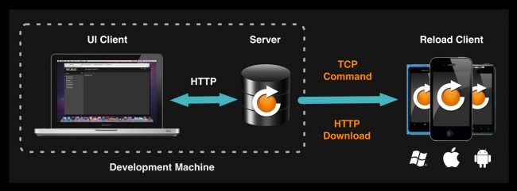
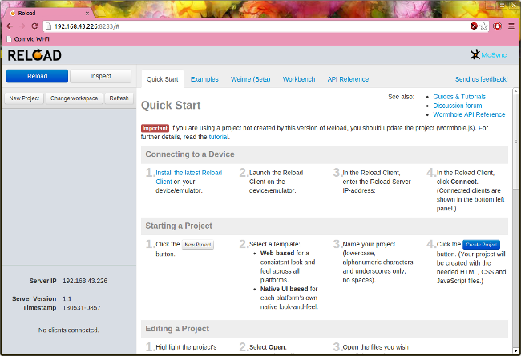
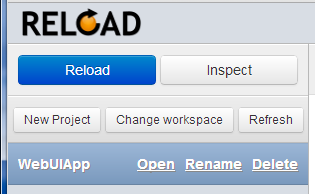

MoSync® Reload is a tool for the rapid development of mobile applications in HTML5 and JavaScript for iOS, Android and Windows Phone mobile platforms. With MoSync Reload you can quickly edit your HTML/JS/CSS code and rapidly run it on one or multiple devices. Just like in the Web browser. Forget long build times!
Note: This guide helps you getting started using MoSync Reload. To get started with HTML5/JS development in the MoSync SDK, check out the Getting Started with HTML5 and JavaScript guide.
MoSync Reload lets you develop apps in HTML5 and JavaScript on your desktop machine and instantly see the result on any number of devices or emulators. It’s just like pressing “reload” in a web browser, but for native mobile apps!
You can access native features such as camera, file system and sensors and create user interfaces using real native UI components.
Once you are happy with the application you have developed, you can use the MoSync SDK to take your project as-is, and build standalone applications for distribution through App Store, Android Market and Windows Marketplace.
Reload has three parts:

To use Reload, you need to install the Reload server on a desktop machine, and then install the Reload client app on one or more devices or emulators.
Download the Reload package from the MoSync Reload download page to get started. This download contains bot the Reload Server/Development UI, and the Reload Client. It is however often the most convinient to install the Reload Client directly from the App Store of your device (see instructions below).
The easiest way to install the MoSync Reload Client on a device is to download and install it from Google Play, Windows Phone Marketplace, or Apple App Store. Search in the App stores for "MoSync Reload".
If you install the Reload Client this way, you do not need Visual Studio, or Xcode, or the Android SDK at all. unless you want to use the emulators in those SDKs. In this case a "manual" install is needed (see below).
When using a Simulator or an Emulator you usually cannot install apps from the App Stores. In this case, you need to use the development tool for the target platform to build and install the Reload Client. This method can also be used as an alternative to installing the Reload Client on a device.
The Reload download package includes Reload Client projects for XCode (iOS), Visual Studio (Windows Phone), and an installable Reload Client .apk file for Android. If you’re using an Android device or emulator, you just need to install the provided .APK on it. For iOS and Windows Phone, you need to build the client using XCode or Visual Studio. Thus you need to download these SDKs, or ask friend with access to them to build the reload client app for you.
Once you’ve installed the client on a device, you will not need access to the platform SDKs when using Reload. So, for instance, if you have an iPhone but no Mac, you only ask a Mac owner to build the application and install it on your phone, and then you can get on with development. However, in order to use emulators, you will need to have the platform SDKs installed.
Detailed instructions follow below.
The Reload Server includes a copy of the Android Debug Bridge (adb). To install the Reload Client on the Android emulator on a Linux machine or an Apple Mac running OS X:
../server/bin/[Linux/Mac]/adb install ReloadClient.apk
To install the Reload Client on the Android emulator on a Windows machine:
"install-dir\server\bin\win\android\adb.exe" install "install-dir\Android Client\ReloadClient.apk"
where install-dir is the path where you installed MoSync Reload. For example:
"C:\Reload\server\bin\win\android\adb.exe" install "C:\Reload\Android Client\ReloadClient.apk"
To install the Reload Client on a Windows Phone Emulator you need first to install Microsoft Visual Studio and the Windows Phone SDK.
The Development UI in MoSync Reload 1.0 is designed for use with WebKit-compatible browsers such as Google Chrome and Apple Safari. In other browsers, such a Mozilla Firefox, the weinre tool is not available, and some functionality may not be available. If your default browser is not WebKit-compatible, kindly open the Reload Development UI manually in Chrome or Safari.
MoSync Reload supports Mac OS X 10.7+. In the Mac download you get a DMG image, which includes an .app package that you can copy into the Application folder on your machine. Then all you need to do is to double click on the Reload icon to run Reload Server/UI on your Mac.
When launching Reload, a server log window is opended, and the UI opens in your default browser.
On Windows you receive a zip file that includes the client projects and an executable file for the Reload server and UI. Double clicking the executable file Reload.exe starts the server, opens server log window, and the also opens the UI in your default web browser.
If the Reload UI/Server does not start, check the following:
Reload is tested on Ubuntu Linux 10.10+ and Kubuntu Linux 10.10+, and needs either GNOME or KDE. The Linux download is a tarball with all the required files. To run Reload on Linux, extract the package, then open a terminal window and go to the extracted folder and type:
#> ./reload
The reload shell script starts the server. The server log is displayed in the same terminal window.To start the UI, open a WebKit browser and navigate to the following address:
http://localhost:8283
To quit the Reload Server, close the terminal window(s) that were opended when starting the server. If you launched Reload Server from the command line, use CTRL-C to terminate.
To exit the Reload Development UI, just close the page in the Web Browser.
To connect your clients to the Reload server you will need to have them connected to the same local network (WiFi). Start the Client on the device/emulator and type in the IP address for the server in the edit box. The IP address is displayed in the lower-left corner of the Development UI, and is also shown in the instructions under the Quick Start tab:

Note: If running the Reload client app in the Android emulator and connecting the server running on the same machine (localhost), use the IP address: 10.0.2.2
The Development UI for Reload lets you manage your projects and reload them on the connected clients.
The project list displays all the project located in your current workspace, which is simply a directory on your hard drive. By default, this will be a folder named MoSync_Reload_Projects located in your home directory.
This screenshot shows a project in the project list, which has been selected by clicking on it:

Select a project and click the Reload button to reload the project on connected devices. All the files in the LocalFiles subdirectory of the project directory are bundled into a single file, which is extracted on the device to the application’s local file system. The file index.html is then displayed by the app.
The Inspect button will also reload your project, but with the code set up for use with the weinre inspection tool. Note that the inspect option also instruments your JavaScript code, to catch runtime errors.
On the top of the project list, there are buttons to create projects and change workspace:
New Project creates a new project in the currently selected workspace (a workspace is just a folder on the disk).
Change Workspace opens a dialog to select a folder. You can also type in a new folder location to create a new workspace.
Refresh will scan the current workspace folder and update the project list in case projects have been created or deleted on the file system (using the file manegement tools of the operating system).
When selecting a project, several action items are also displayed:
Open opens a folder that shows the files in the project.To edit project files (HTML/CSS/JavaScript files), you can use your favourite text editor. Reload does not force you to switch to a new editor. You can also drop in and edit media files, like images and sounds. If you have an existing HTML5 project, drop the files here to get up and running. Note: The main HTML file must be named index.html.
Rename opens a dialog to input a new project name.
Delete deletes all the project files on disk.
The Reload UI contains the following tools, each available under its own tab:
Quick Start displays a guide that helps you to get started with using Reload.
Weinre (Beta) is an industry standard HTML/JS web inspector to help debug applications. This is the first Release of Reload that comes with weinre, and we provide it as a beta feature. Note that for weinre to work, you must reload your project with the Inspect button.
Workbench is a JavaScript evaluation tool that you can use to instantly run JavaScript code on connected devices. The JaavScript Workbench is useful for experimenting with code, debugging, and for learning coding. Please, see the JavavaScript Workbench Tutorial for further details.
Log displays log messages printed by mosync.rlog, error messages and results from code evaluated in the Workbench. To print a log message here from your JavaScript code, just use: mosync.rlog("Hello World")
API Reference gives you the documentation for the MoSync JavaScript APIs. They give you access to native features such as camera, sensors, file system, and native UI components.
Follow these steps to test that MoSync Reload is set up correctly:
That's how quick and easy it is to edit and reload apps across multiple clients using MoSync Reload!